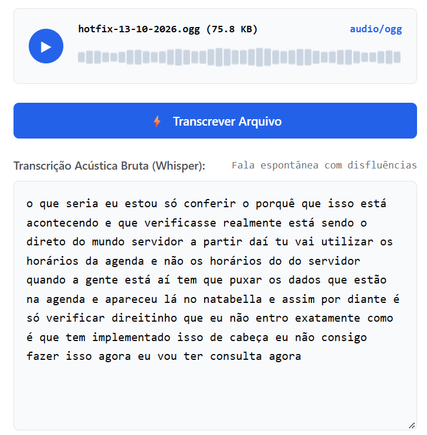

Local Speech Processing & Structured Prompt Generation
Mecanismo backend em Python (FastAPI) que transforma fala espontânea em texto normalizado e instruções estruturadas para utilização com modelos de linguagem. Operação 100% em CPU local com Faster-Whisper INT8.
Da Fala Caótica ao Prompt Estruturado
Demonstração prática utilizando a gravação real de áudio hotfix-13-10-2026.ogg (28.4 segundos), evidenciando a desconstrução de ruído verbal e compilação em schema técnico determinístico.
- Hesitações e disfluências ("o que seria", "estou só conferir").
- Gaguejo e redundâncias fonéticas ("do do servidor", "natabella").
- Informações periféricas irrelevantes ("vou ter consulta agora").
- ✓ -64% de ruído verbal descartado sem auxílio de LLM lenta.
- ✓ Remoção cirúrgica de contexto pessoal irrelevante.
- ✓ Pontuação reestruturada e capitalização canônica.
- ✓ Isolamento em delimitador seguro contra injeção acústica.
- ✓ Schema estrito de engenharia pronto para qualquer LLM.
- ✓ Decomposição de tarefas clara, objetiva e determinística.
Pipeline de Processamento em 5 Estágios
Arquitetura desacoplada e determinística. Selecione manualmente qualquer etapa para inspecionar parâmetros técnicos, bibliotecas e garantias de segurança.
Ingestão Acústica & Validação de Magic Bytes
Validação Estrita de Formatos & Teto de Memória
Rejeição de arquivos com base na leitura real dos primeiros bytes do arquivo (Magic Bytes), sem jamais confiar no cabeçalho Content-Type enviado pelo cliente. Limite rigoroso de 25 MB com streaming assíncrono para evitar ataques de Denial of Service (DoS) por estouro de memória.
Processamento e Transmissão
Armazenamento atômico em arquivo temporário com sanitização de nomes de arquivos contra Path Traversal, alimentando diretamente o buffer do motor CTranslate2 via descritor seguro.
Prompt Engineering Studio
Explore as 6 estratégias cognitivas integradas no motor. Alterne técnicas, ative a higienização NLP e visualize o prompt estruturado resultante.
Engenharia, Stack & Pentágono de Defesa
Projeto estruturado sob rigorosos princípios de segurança defensiva, isolamento de recursos e engenharia de backend sênior.
O Pentágono de Defesa Expandido
Garantias estruturais que asseguram a integridade de dados e proteção contra falhas em produção.
Isolamento de Tenant & Banco
Filtro obrigatório de tenant_id em 100% das queries. SQLite configurado com WAL e transações atômicas.
Zero Confiança no Cliente
Server RBAC estrito (viewer, operator, admin) com autenticação via cabeçalho X-API-Key seguro.
IDOR Sistemático
Validação de posse de recursos em todas as rotas de transcrição e execução contra acesso cruzado.
Idempotência & Concorrência
Mutações protegidas no banco, limites de execução por job e transações isoladas fora de I/O de rede.
Segredos & Sanitização
Validação binária de Magic Bytes de arquivos de áudio e escape de delimitadores XML anti-injection.
Decisões Arquiteturais Formais (ADRs 001 a 004)
Consulte a documentação técnica canônica no repositório com o histórico de trade-offs, escolhas de bibliotecas e padrões de resiliência.
Como Executar Localmente na sua Máquina
Esta página no GitHub Pages é a apresentação técnica institucional do projeto. Para utilizar o Web Studio completo com captura real do microfone e transcrição Faster-Whisper INT8 em CPU, inicie o backend localmente.
$ git clone https://github.com/ElyssonAlvs/audio-prompt-engine.git
$ cd audio-prompt-engine
# 2. Sincronizar dependências no ambiente virtual isolado
$ uv sync
# 3. Iniciar o servidor backend e interface web na porta 8000
$ uv run uvicorn src.main:app --port 8000

uv run uvicorn src.main:app --port 8000, a rota raiz (GET /) disponibiliza a interface completa conectada à API local, com captura de voz pelo microfone, analisador acústico em tempo real e persistência de histórico SQLite.